Fictional QA data, local preview. Before is 44e831d (batch 1); after is branch claude/owner-batch-2.
Old link /app?view=schedule&day=…&location=…&employee=AUDIT-E used to open Home's second schedule editor. It now redirects to the Schedule page for the same week, day and location, with Alexandra's row focused.
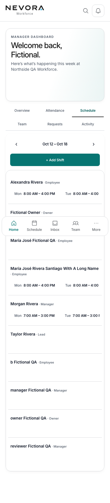
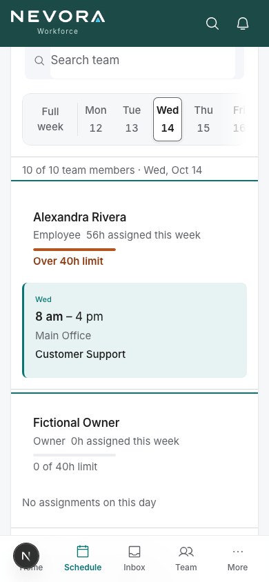
/app?view=requests, Home's "Pending requests", Time off's and Shift requests' "All requests" now open the Inbox filtered to Requests.
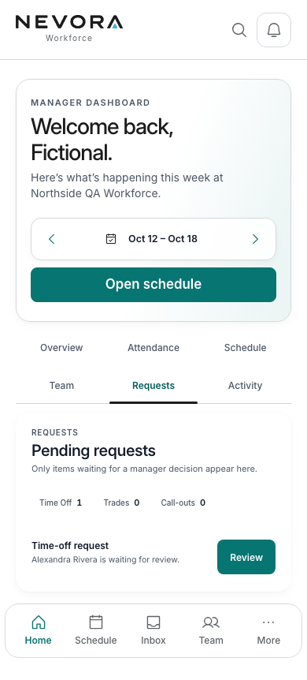
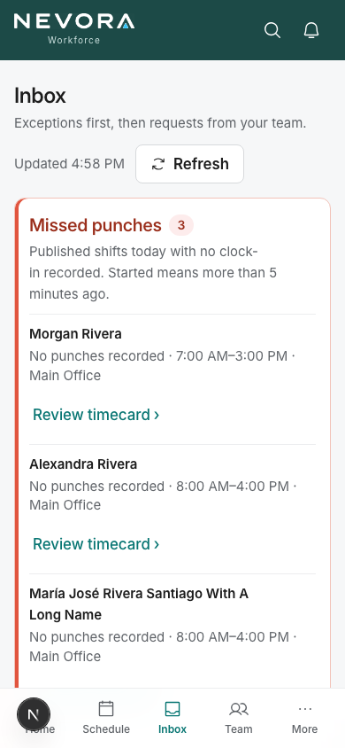
The dashboard tab row drops Schedule and Requests; "Team" reads "Team overview" (the metrics summary). Employees stays the team directory.
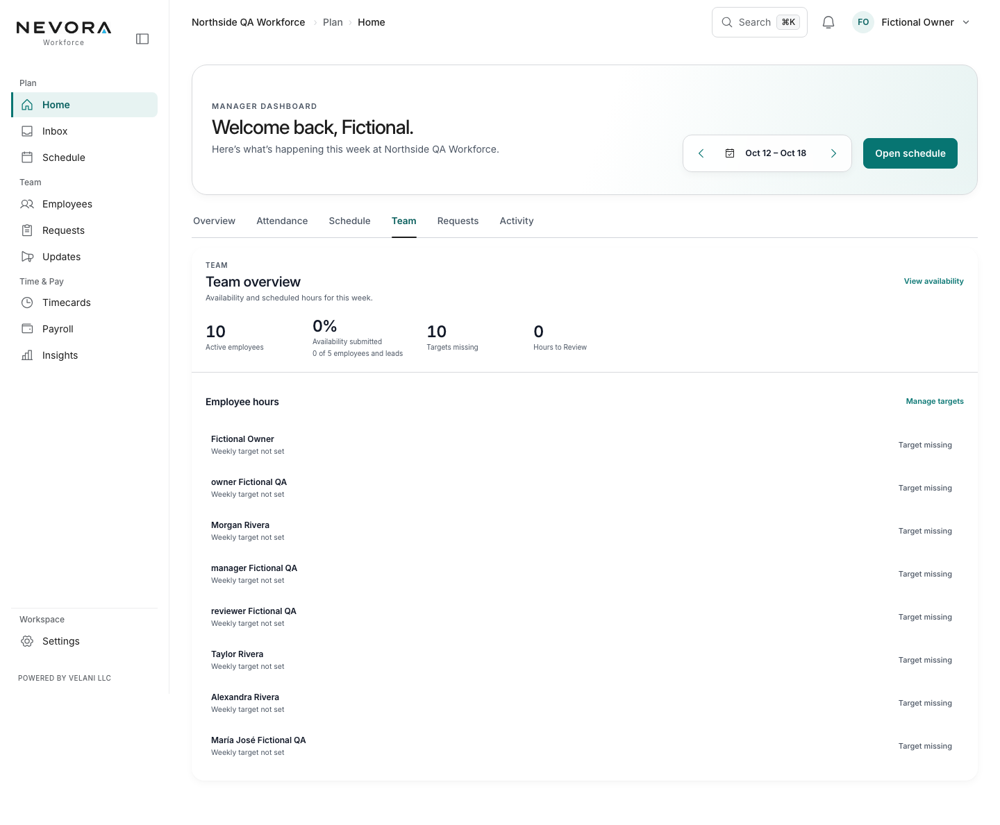
Employee page gains "Portal sign-in → Account recovery". The form opens with their ID filled in and Back returns to that employee. Opened directly, Back goes to Employees (it went to the old Home Team view).
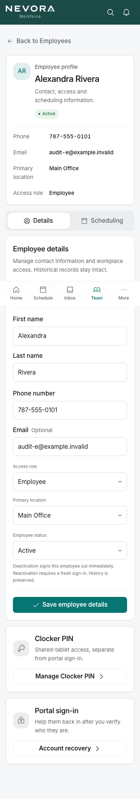
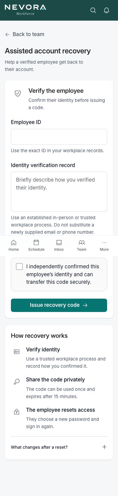
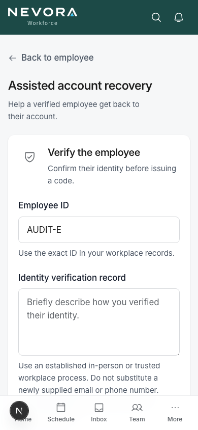
"Set weekly hours" opens Scheduling rules at this employee's row.
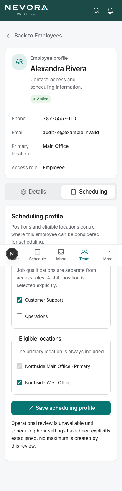
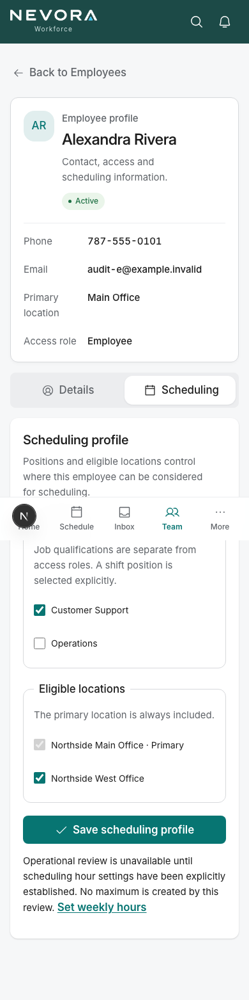
Cancel on Edit shift (and Back on Create shift, and the redirect after save or delete) returns to the shift's week, location and day, with that person's row focused. Before, Cancel opened the week with no location, day or person.
More, Search, the section tab and the heading all say "Time exports" (search for "payroll export" still finds it). Company profile's heading matches its entry. Notifications explains it is alerts; decisions are in Inbox.
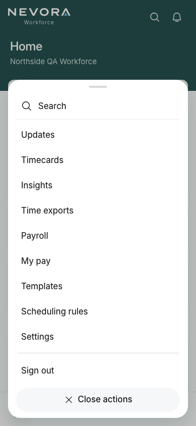
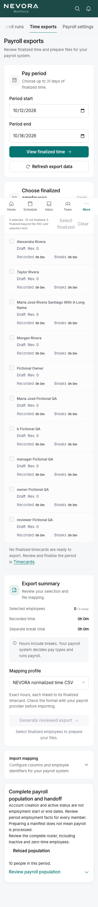
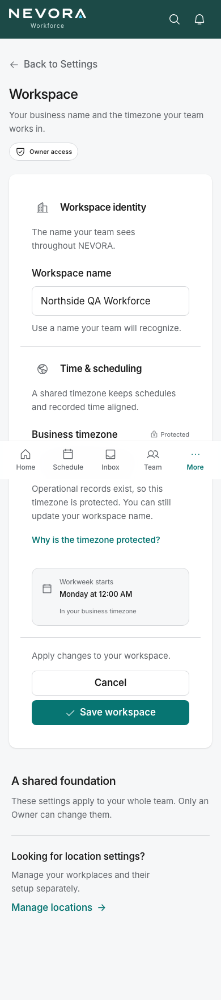
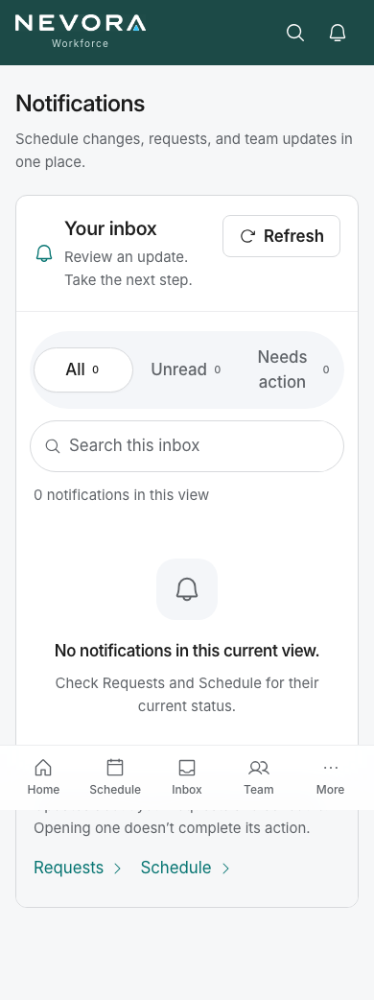
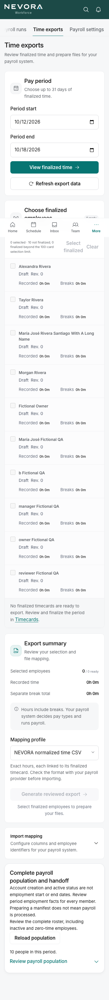
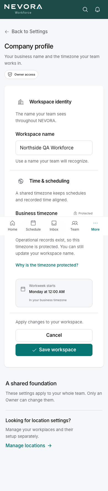
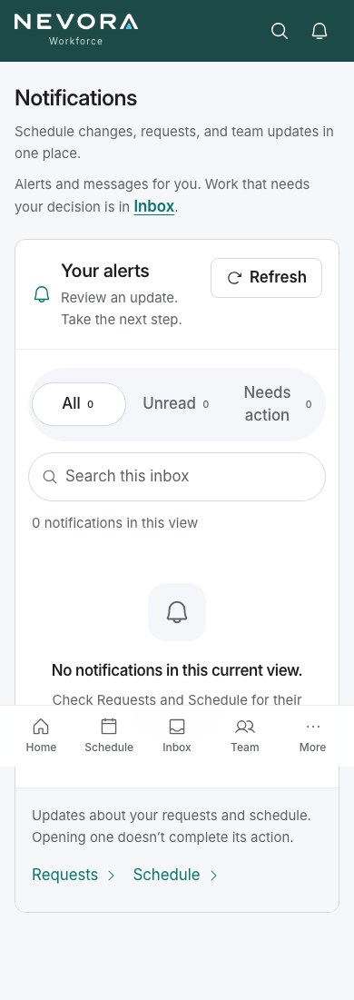